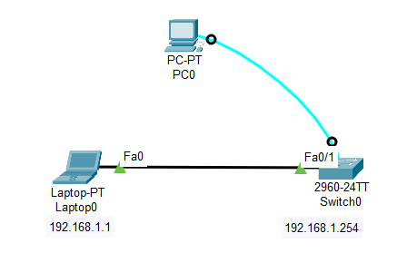

1台 PC
1台 Laptop
1台 2960 交换机

Switch(config)#enable password 2026
vty：Virtual Teletype Terminal，表示虚拟电信终端
vty 0 4：表示允许5个线路/用户远程登陆该设备；默认至少4个；最多15个
Switch(config)#line vty 0 4 Switch(config-line)#password tel2026 Switch(config-line)#login
通常配置 vlan1 为管理地址
交换机 Switch0 和远超主机 Laptop0 的 IP 地址必须是同一网段
Switch(config)#int vlan 1 Switch(config-if)#ip add 192.168.1.254 255.255.255.0 Switch(config-if)#no shutdown Switch(config-if)#end Switch#write
Switch#show running-config
192.168.1.1
255.255.255.0
C:\>telnet 192.168.1.254 Trying 192.168.1.254 ...Open User Access Verification Password: Switch>